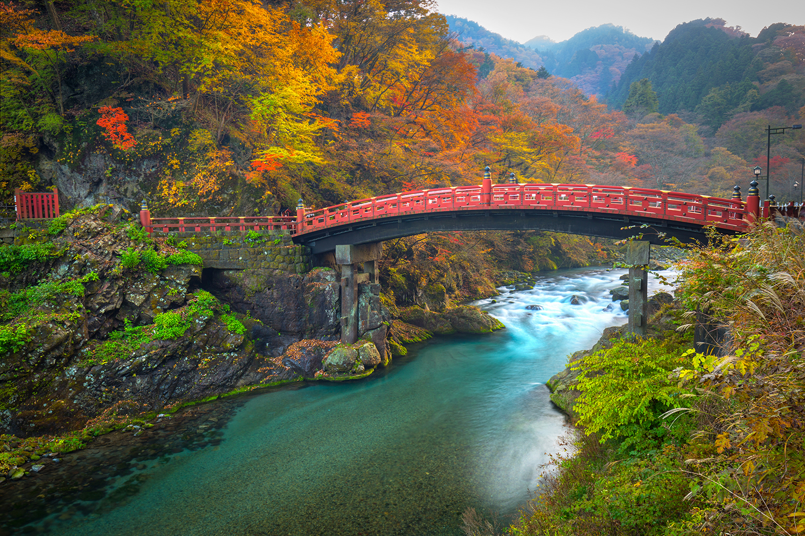
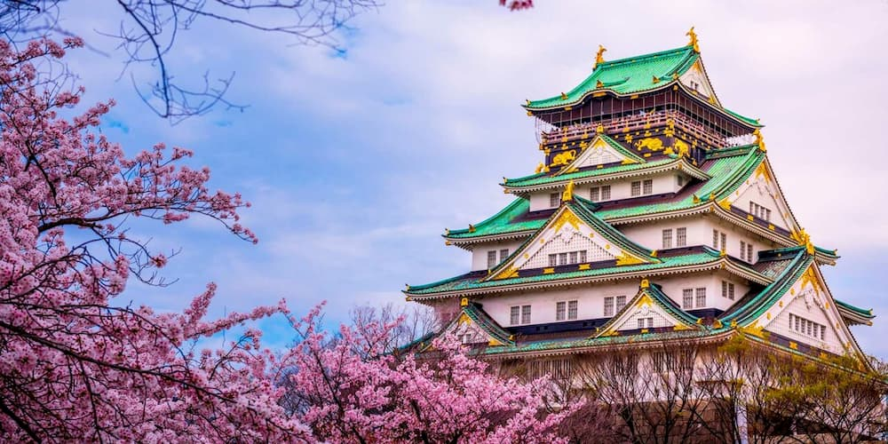
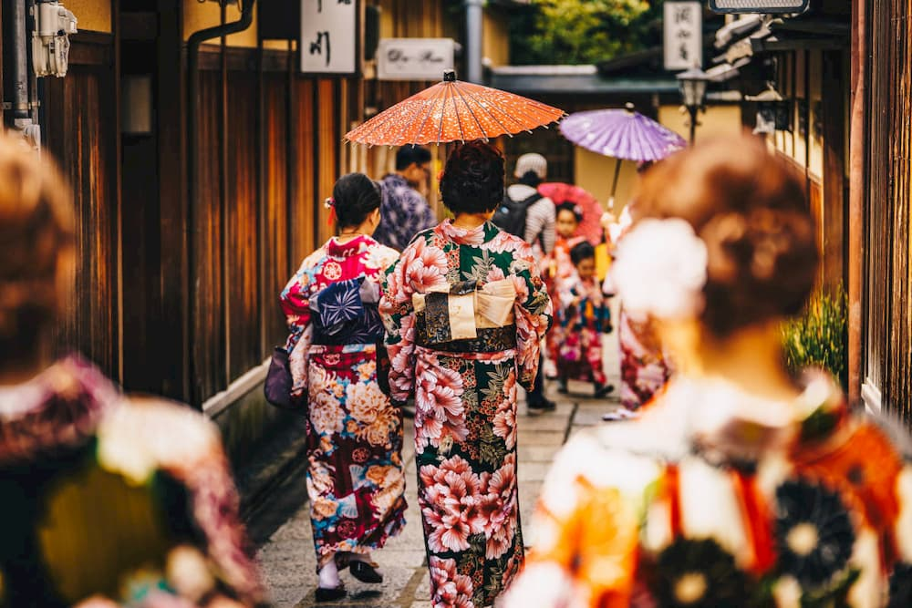

Nikko
El Parque Nacional de Nikko está lleno de rutas de senderismo de gran belleza, que discurren entre montañas y cascadas, por lo que es ideal para los amantes de la naturaleza.

Osaka
Osaka es la tercera ciudad más grande de Japón (por detrás de Tokio y Yokohama) y la principal de la región de Kansai.

Kioto
Es famosa por sus numerosos templos budistas clásicos y sus jardines, palacios imperiales, santuarios Shinto y casas de madera tradicionales.